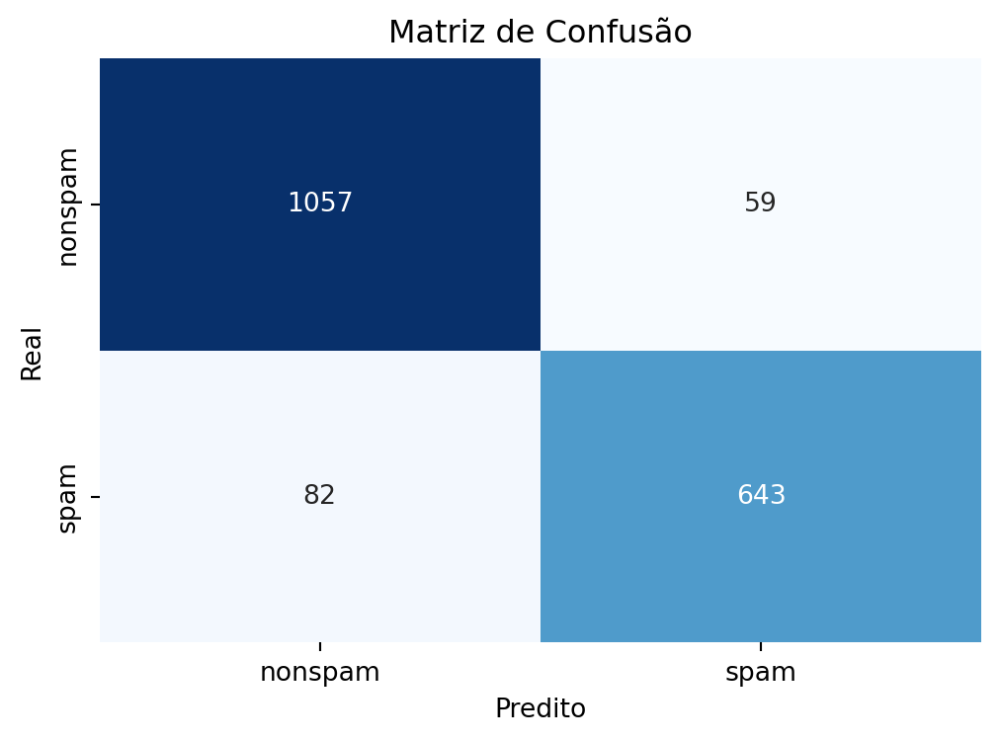

import pandas as pd
import matplotlib.pyplot as plt
import seaborn as sns
import numpy as np
from sklearn.model_selection import train_test_split
from sklearn.utils import all_estimators
from sklearn.linear_model import LogisticRegression
from sklearn.metrics import confusion_matrix
from sklearn.linear_model import LinearRegression
from sklearn.metrics import classification_report
from sklearn.metrics import mean_squared_error
from sklearn.metrics import mean_absolute_error
from sklearn.metrics import r2_score10 Criação e Avaliação de Preditores
O pacote scikit-learn é um pacote muito útil para o machine learning pois entrega muitas ferramentas que simplificam a criação de modelos preditivos. A função train_test_split exposta em capítulos anteriores é um exemplo. A construção de preditores feitos usando esse pacote será o foco desse capítulo.
Imports
Segue abaixo os imports:
Classificadores
Vamos utilizar a base de dados spam novamente para realizarmos o procedimento de predição para um e-mail (se ele é spam ou não spam), dessa vez utilizando o pacote scikit-learn.
Analisando a base spam
Vamos analisar a base spam.
#trocar essa url pelo caminho da base spam de vocês.
spam = pd.read_csv("Cadernos Grupo Python\\Criação e Avaliação de Preditores\\spam.csv")
print(spam) make address all num3d our over remove internet order mail \
0 0.00 0.64 0.64 0.0 0.32 0.00 0.00 0.00 0.00 0.00
1 0.21 0.28 0.50 0.0 0.14 0.28 0.21 0.07 0.00 0.94
2 0.06 0.00 0.71 0.0 1.23 0.19 0.19 0.12 0.64 0.25
3 0.00 0.00 0.00 0.0 0.63 0.00 0.31 0.63 0.31 0.63
4 0.00 0.00 0.00 0.0 0.63 0.00 0.31 0.63 0.31 0.63
... ... ... ... ... ... ... ... ... ... ...
4596 0.31 0.00 0.62 0.0 0.00 0.31 0.00 0.00 0.00 0.00
4597 0.00 0.00 0.00 0.0 0.00 0.00 0.00 0.00 0.00 0.00
4598 0.30 0.00 0.30 0.0 0.00 0.00 0.00 0.00 0.00 0.00
4599 0.96 0.00 0.00 0.0 0.32 0.00 0.00 0.00 0.00 0.00
4600 0.00 0.00 0.65 0.0 0.00 0.00 0.00 0.00 0.00 0.00
... charSemicolon charRoundbracket charSquarebracket \
0 ... 0.000 0.000 0.0
1 ... 0.000 0.132 0.0
2 ... 0.010 0.143 0.0
3 ... 0.000 0.137 0.0
4 ... 0.000 0.135 0.0
... ... ... ... ...
4596 ... 0.000 0.232 0.0
4597 ... 0.000 0.000 0.0
4598 ... 0.102 0.718 0.0
4599 ... 0.000 0.057 0.0
4600 ... 0.000 0.000 0.0
charExclamation charDollar charHash capitalAve capitalLong \
0 0.778 0.000 0.000 3.756 61
1 0.372 0.180 0.048 5.114 101
2 0.276 0.184 0.010 9.821 485
3 0.137 0.000 0.000 3.537 40
4 0.135 0.000 0.000 3.537 40
... ... ... ... ... ...
4596 0.000 0.000 0.000 1.142 3
4597 0.353 0.000 0.000 1.555 4
4598 0.000 0.000 0.000 1.404 6
4599 0.000 0.000 0.000 1.147 5
4600 0.125 0.000 0.000 1.250 5
capitalTotal type
0 278 spam
1 1028 spam
2 2259 spam
3 191 spam
4 191 spam
... ... ...
4596 88 nonspam
4597 14 nonspam
4598 118 nonspam
4599 78 nonspam
4600 40 nonspam
[4601 rows x 58 columns]A base possui 58 colunas 4601 linhas. Essas colunas estão em frequência ( Detalhar a base aqui).
A coluna type possui valores diferentes dos demais, spam e nonspam. Ela é a coluna de rótulo da base. Com ela conseguimos saber a classificação original dos emails em spam ou não spam. Precisamos entregar ao scikit learn essa coluna separada das demais para não influenciar o modelo, o modelo estaria “colando” se fosse mantida.
Separação treino e teste
Para fazer a separação das amostras em treino e teste vamos primeiramente particionar a base de dados com a função train_test_split(). Ela divide a base mantendo a proporção das classes de classificação, nesse caso, spam e nonspam, mantendo a proporção da base original. Isso evita que ao acaso possa sair da separação uma base para treino muito diferente da original, que afeta severamente a qualidade do modelo.
# Separando a coluna de rótulo das demais
XSpam = spam.loc[:, spam.columns != "type"]
YSpam = spam["type"]
# Separação de amostras treino e teste
x_trainSpam, x_testSpam, y_trainSpam, y_testSpam = train_test_split(XSpam, YSpam, test_size=0.4, random_state=11)No caderno de Introdução a Programação com Python falamos que é importante criar variáveis com nomes elucidativos.Esse X e Y podem parecer estranho a partir desse princípio, porém, essa nomenclatura de variáveis é um padrão utilizado por muitos no Python para fazer a separação do rótulo das demais colunas. Assim como numa função matemática, X -> Y, colunas de dados -> coluna de rótulo, por isso X e Y.
O parâmetro test_size recebe a proporção de dados teste dentro do total, logo, seguindo o exemplo, 40% da base é teste e 60% é treino.
O parâmetro random_state é uma maneira de assegurar que a separação que está sendo feita aqui é a separação que está sendo feita por vocês, para fins didáticos. Ele trapaceia a aleatoriedade do sorteio, pré-determinando o resultado a partir do número inserido, conhecido como seed. Isso é útil também se quisermos guardar a aleatoriedade usada para testar novamente depois. Normalmente sempre inserimos uma seed para que possamos replicar o experimento caso seja do nosso desejo no futuro.
O resultado da função train_test_split são 4 bases novas, x_train, x_teste, y_train e y_test. Dados para treino sem rótulo, dados para teste sem rótulo, rótulo dos dados para treino, rótulo dos dados para teste, gerados a partir do X (dados sem rótulo) e do Y (rótulo dos dados) que inserimos dentro da função train_test_split. Acrescentei Spam no final de cada variável para diferenciar do regressor que faremos a seguir.
Seleção de algoritmo de aprendizado de máquina para o classificador.
Dado que já foi feito a separação das amostras treino e teste, o próximo passo é realizarmos o treinamento. Para isso é preciso escolher um dos algoritmos para ser utilizado. O scikit-learn suporta uma infinidade de diferentes modelos que podemos escolher.
Uma lista com todos os algoritmos implementados no pacote scikit-learn pode ser obtida com o seguinte comando:
# para ver todos os algoritmos (ou como o scikit-learn chama, estimadores)
print(all_estimators())
# para filtrar os algoritmos por seu tipo
print(all_estimators(type_filter='classifier')) [('ARDRegression', <class 'sklearn.linear_model._bayes.ARDRegression'>), ('AdaBoostClassifier', <class 'sklearn.ensemble._weight_boosting.AdaBoostClassifier'>), ('AdaBoostRegressor', <class 'sklearn.ensemble._weight_boosting.AdaBoostRegressor'>), ('AdditiveChi2Sampler', <class 'sklearn.kernel_approximation.AdditiveChi2Sampler'>), ('AffinityPropagation', <class 'sklearn.cluster._affinity_propagation.AffinityPropagation'>), ('AgglomerativeClustering', <class 'sklearn.cluster._agglomerative.AgglomerativeClustering'>), ('BaggingClassifier', <class 'sklearn.ensemble._bagging.BaggingClassifier'>), ('BaggingRegressor', <class 'sklearn.ensemble._bagging.BaggingRegressor'>), ('BayesianGaussianMixture', <class 'sklearn.mixture._bayesian_mixture.BayesianGaussianMixture'>), ('BayesianRidge', <class 'sklearn.linear_model._bayes.BayesianRidge'>), ('BernoulliNB', <class 'sklearn.naive_bayes.BernoulliNB'>), ('BernoulliRBM', <class 'sklearn.neural_network._rbm.BernoulliRBM'>), ('Binarizer', <class 'sklearn.preprocessing._data.Binarizer'>), ('Birch', <class 'sklearn.cluster._birch.Birch'>), ('BisectingKMeans', <class 'sklearn.cluster._bisect_k_means.BisectingKMeans'>), ('CCA', <class 'sklearn.cross_decomposition._pls.CCA'>), ('CalibratedClassifierCV', <class 'sklearn.calibration.CalibratedClassifierCV'>), ('CategoricalNB', <class 'sklearn.naive_bayes.CategoricalNB'>), ('ClassifierChain', <class 'sklearn.multioutput.ClassifierChain'>), ('ColumnTransformer', <class 'sklearn.compose._column_transformer.ColumnTransformer'>), ('ComplementNB', <class 'sklearn.naive_bayes.ComplementNB'>), ('CountVectorizer', <class 'sklearn.feature_extraction.text.CountVectorizer'>), ('DBSCAN', <class 'sklearn.cluster._dbscan.DBSCAN'>), ('DecisionTreeClassifier', <class 'sklearn.tree._classes.DecisionTreeClassifier'>), ('DecisionTreeRegressor', <class 'sklearn.tree._classes.DecisionTreeRegressor'>), ('DictVectorizer', <class 'sklearn.feature_extraction._dict_vectorizer.DictVectorizer'>), ('DictionaryLearning', <class 'sklearn.decomposition._dict_learning.DictionaryLearning'>), ('DummyClassifier', <class 'sklearn.dummy.DummyClassifier'>), ('DummyRegressor', <class 'sklearn.dummy.DummyRegressor'>), ('ElasticNet', <class 'sklearn.linear_model._coordinate_descent.ElasticNet'>), ('ElasticNetCV', <class 'sklearn.linear_model._coordinate_descent.ElasticNetCV'>), ('EllipticEnvelope', <class 'sklearn.covariance._elliptic_envelope.EllipticEnvelope'>), ('EmpiricalCovariance', <class 'sklearn.covariance._empirical_covariance.EmpiricalCovariance'>), ('ExtraTreeClassifier', <class 'sklearn.tree._classes.ExtraTreeClassifier'>), ('ExtraTreeRegressor', <class 'sklearn.tree._classes.ExtraTreeRegressor'>), ('ExtraTreesClassifier', <class 'sklearn.ensemble._forest.ExtraTreesClassifier'>), ('ExtraTreesRegressor', <class 'sklearn.ensemble._forest.ExtraTreesRegressor'>), ('FactorAnalysis', <class 'sklearn.decomposition._factor_analysis.FactorAnalysis'>), ('FastICA', <class 'sklearn.decomposition._fastica.FastICA'>), ('FeatureAgglomeration', <class 'sklearn.cluster._agglomerative.FeatureAgglomeration'>), ('FeatureHasher', <class 'sklearn.feature_extraction._hash.FeatureHasher'>), ('FeatureUnion', <class 'sklearn.pipeline.FeatureUnion'>), ('FixedThresholdClassifier', <class 'sklearn.model_selection._classification_threshold.FixedThresholdClassifier'>), ('FunctionTransformer', <class 'sklearn.preprocessing._function_transformer.FunctionTransformer'>), ('GammaRegressor', <class 'sklearn.linear_model._glm.glm.GammaRegressor'>), ('GaussianMixture', <class 'sklearn.mixture._gaussian_mixture.GaussianMixture'>), ('GaussianNB', <class 'sklearn.naive_bayes.GaussianNB'>), ('GaussianProcessClassifier', <class 'sklearn.gaussian_process._gpc.GaussianProcessClassifier'>), ('GaussianProcessRegressor', <class 'sklearn.gaussian_process._gpr.GaussianProcessRegressor'>), ('GaussianRandomProjection', <class 'sklearn.random_projection.GaussianRandomProjection'>), ('GenericUnivariateSelect', <class 'sklearn.feature_selection._univariate_selection.GenericUnivariateSelect'>), ('GradientBoostingClassifier', <class 'sklearn.ensemble._gb.GradientBoostingClassifier'>), ('GradientBoostingRegressor', <class 'sklearn.ensemble._gb.GradientBoostingRegressor'>), ('GraphicalLasso', <class 'sklearn.covariance._graph_lasso.GraphicalLasso'>), ('GraphicalLassoCV', <class 'sklearn.covariance._graph_lasso.GraphicalLassoCV'>), ('GridSearchCV', <class 'sklearn.model_selection._search.GridSearchCV'>), ('HDBSCAN', <class 'sklearn.cluster._hdbscan.hdbscan.HDBSCAN'>), ('HashingVectorizer', <class 'sklearn.feature_extraction.text.HashingVectorizer'>), ('HistGradientBoostingClassifier', <class 'sklearn.ensemble._hist_gradient_boosting.gradient_boosting.HistGradientBoostingClassifier'>), ('HistGradientBoostingRegressor', <class 'sklearn.ensemble._hist_gradient_boosting.gradient_boosting.HistGradientBoostingRegressor'>), ('HuberRegressor', <class 'sklearn.linear_model._huber.HuberRegressor'>), ('IncrementalPCA', <class 'sklearn.decomposition._incremental_pca.IncrementalPCA'>), ('IsolationForest', <class 'sklearn.ensemble._iforest.IsolationForest'>), ('Isomap', <class 'sklearn.manifold._isomap.Isomap'>), ('IsotonicRegression', <class 'sklearn.isotonic.IsotonicRegression'>), ('KBinsDiscretizer', <class 'sklearn.preprocessing._discretization.KBinsDiscretizer'>), ('KMeans', <class 'sklearn.cluster._kmeans.KMeans'>), ('KNNImputer', <class 'sklearn.impute._knn.KNNImputer'>), ('KNeighborsClassifier', <class 'sklearn.neighbors._classification.KNeighborsClassifier'>), ('KNeighborsRegressor', <class 'sklearn.neighbors._regression.KNeighborsRegressor'>), ('KNeighborsTransformer', <class 'sklearn.neighbors._graph.KNeighborsTransformer'>), ('KernelCenterer', <class 'sklearn.preprocessing._data.KernelCenterer'>), ('KernelDensity', <class 'sklearn.neighbors._kde.KernelDensity'>), ('KernelPCA', <class 'sklearn.decomposition._kernel_pca.KernelPCA'>), ('KernelRidge', <class 'sklearn.kernel_ridge.KernelRidge'>), ('LabelBinarizer', <class 'sklearn.preprocessing._label.LabelBinarizer'>), ('LabelEncoder', <class 'sklearn.preprocessing._label.LabelEncoder'>), ('LabelPropagation', <class 'sklearn.semi_supervised._label_propagation.LabelPropagation'>), ('LabelSpreading', <class 'sklearn.semi_supervised._label_propagation.LabelSpreading'>), ('Lars', <class 'sklearn.linear_model._least_angle.Lars'>), ('LarsCV', <class 'sklearn.linear_model._least_angle.LarsCV'>), ('Lasso', <class 'sklearn.linear_model._coordinate_descent.Lasso'>), ('LassoCV', <class 'sklearn.linear_model._coordinate_descent.LassoCV'>), ('LassoLars', <class 'sklearn.linear_model._least_angle.LassoLars'>), ('LassoLarsCV', <class 'sklearn.linear_model._least_angle.LassoLarsCV'>), ('LassoLarsIC', <class 'sklearn.linear_model._least_angle.LassoLarsIC'>), ('LatentDirichletAllocation', <class 'sklearn.decomposition._lda.LatentDirichletAllocation'>), ('LedoitWolf', <class 'sklearn.covariance._shrunk_covariance.LedoitWolf'>), ('LinearDiscriminantAnalysis', <class 'sklearn.discriminant_analysis.LinearDiscriminantAnalysis'>), ('LinearRegression', <class 'sklearn.linear_model._base.LinearRegression'>), ('LinearSVC', <class 'sklearn.svm._classes.LinearSVC'>), ('LinearSVR', <class 'sklearn.svm._classes.LinearSVR'>), ('LocalOutlierFactor', <class 'sklearn.neighbors._lof.LocalOutlierFactor'>), ('LocallyLinearEmbedding', <class 'sklearn.manifold._locally_linear.LocallyLinearEmbedding'>), ('LogisticRegression', <class 'sklearn.linear_model._logistic.LogisticRegression'>), ('LogisticRegressionCV', <class 'sklearn.linear_model._logistic.LogisticRegressionCV'>), ('MDS', <class 'sklearn.manifold._mds.MDS'>), ('MLPClassifier', <class 'sklearn.neural_network._multilayer_perceptron.MLPClassifier'>), ('MLPRegressor', <class 'sklearn.neural_network._multilayer_perceptron.MLPRegressor'>), ('MaxAbsScaler', <class 'sklearn.preprocessing._data.MaxAbsScaler'>), ('MeanShift', <class 'sklearn.cluster._mean_shift.MeanShift'>), ('MinCovDet', <class 'sklearn.covariance._robust_covariance.MinCovDet'>), ('MinMaxScaler', <class 'sklearn.preprocessing._data.MinMaxScaler'>), ('MiniBatchDictionaryLearning', <class 'sklearn.decomposition._dict_learning.MiniBatchDictionaryLearning'>), ('MiniBatchKMeans', <class 'sklearn.cluster._kmeans.MiniBatchKMeans'>), ('MiniBatchNMF', <class 'sklearn.decomposition._nmf.MiniBatchNMF'>), ('MiniBatchSparsePCA', <class 'sklearn.decomposition._sparse_pca.MiniBatchSparsePCA'>), ('MissingIndicator', <class 'sklearn.impute._base.MissingIndicator'>), ('MultiLabelBinarizer', <class 'sklearn.preprocessing._label.MultiLabelBinarizer'>), ('MultiOutputClassifier', <class 'sklearn.multioutput.MultiOutputClassifier'>), ('MultiOutputRegressor', <class 'sklearn.multioutput.MultiOutputRegressor'>), ('MultiTaskElasticNet', <class 'sklearn.linear_model._coordinate_descent.MultiTaskElasticNet'>), ('MultiTaskElasticNetCV', <class 'sklearn.linear_model._coordinate_descent.MultiTaskElasticNetCV'>), ('MultiTaskLasso', <class 'sklearn.linear_model._coordinate_descent.MultiTaskLasso'>), ('MultiTaskLassoCV', <class 'sklearn.linear_model._coordinate_descent.MultiTaskLassoCV'>), ('MultinomialNB', <class 'sklearn.naive_bayes.MultinomialNB'>), ('NMF', <class 'sklearn.decomposition._nmf.NMF'>), ('NearestCentroid', <class 'sklearn.neighbors._nearest_centroid.NearestCentroid'>), ('NearestNeighbors', <class 'sklearn.neighbors._unsupervised.NearestNeighbors'>), ('NeighborhoodComponentsAnalysis', <class 'sklearn.neighbors._nca.NeighborhoodComponentsAnalysis'>), ('Normalizer', <class 'sklearn.preprocessing._data.Normalizer'>), ('NuSVC', <class 'sklearn.svm._classes.NuSVC'>), ('NuSVR', <class 'sklearn.svm._classes.NuSVR'>), ('Nystroem', <class 'sklearn.kernel_approximation.Nystroem'>), ('OAS', <class 'sklearn.covariance._shrunk_covariance.OAS'>), ('OPTICS', <class 'sklearn.cluster._optics.OPTICS'>), ('OneClassSVM', <class 'sklearn.svm._classes.OneClassSVM'>), ('OneHotEncoder', <class 'sklearn.preprocessing._encoders.OneHotEncoder'>), ('OneVsOneClassifier', <class 'sklearn.multiclass.OneVsOneClassifier'>), ('OneVsRestClassifier', <class 'sklearn.multiclass.OneVsRestClassifier'>), ('OrdinalEncoder', <class 'sklearn.preprocessing._encoders.OrdinalEncoder'>), ('OrthogonalMatchingPursuit', <class 'sklearn.linear_model._omp.OrthogonalMatchingPursuit'>), ('OrthogonalMatchingPursuitCV', <class 'sklearn.linear_model._omp.OrthogonalMatchingPursuitCV'>), ('OutputCodeClassifier', <class 'sklearn.multiclass.OutputCodeClassifier'>), ('PCA', <class 'sklearn.decomposition._pca.PCA'>), ('PLSCanonical', <class 'sklearn.cross_decomposition._pls.PLSCanonical'>), ('PLSRegression', <class 'sklearn.cross_decomposition._pls.PLSRegression'>), ('PLSSVD', <class 'sklearn.cross_decomposition._pls.PLSSVD'>), ('PassiveAggressiveClassifier', <class 'sklearn.linear_model._passive_aggressive.PassiveAggressiveClassifier'>), ('PassiveAggressiveRegressor', <class 'sklearn.linear_model._passive_aggressive.PassiveAggressiveRegressor'>), ('PatchExtractor', <class 'sklearn.feature_extraction.image.PatchExtractor'>), ('Perceptron', <class 'sklearn.linear_model._perceptron.Perceptron'>), ('Pipeline', <class 'sklearn.pipeline.Pipeline'>), ('PoissonRegressor', <class 'sklearn.linear_model._glm.glm.PoissonRegressor'>), ('PolynomialCountSketch', <class 'sklearn.kernel_approximation.PolynomialCountSketch'>), ('PolynomialFeatures', <class 'sklearn.preprocessing._polynomial.PolynomialFeatures'>), ('PowerTransformer', <class 'sklearn.preprocessing._data.PowerTransformer'>), ('QuadraticDiscriminantAnalysis', <class 'sklearn.discriminant_analysis.QuadraticDiscriminantAnalysis'>), ('QuantileRegressor', <class 'sklearn.linear_model._quantile.QuantileRegressor'>), ('QuantileTransformer', <class 'sklearn.preprocessing._data.QuantileTransformer'>), ('RANSACRegressor', <class 'sklearn.linear_model._ransac.RANSACRegressor'>), ('RBFSampler', <class 'sklearn.kernel_approximation.RBFSampler'>), ('RFE', <class 'sklearn.feature_selection._rfe.RFE'>), ('RFECV', <class 'sklearn.feature_selection._rfe.RFECV'>), ('RadiusNeighborsClassifier', <class 'sklearn.neighbors._classification.RadiusNeighborsClassifier'>), ('RadiusNeighborsRegressor', <class 'sklearn.neighbors._regression.RadiusNeighborsRegressor'>), ('RadiusNeighborsTransformer', <class 'sklearn.neighbors._graph.RadiusNeighborsTransformer'>), ('RandomForestClassifier', <class 'sklearn.ensemble._forest.RandomForestClassifier'>), ('RandomForestRegressor', <class 'sklearn.ensemble._forest.RandomForestRegressor'>), ('RandomTreesEmbedding', <class 'sklearn.ensemble._forest.RandomTreesEmbedding'>), ('RandomizedSearchCV', <class 'sklearn.model_selection._search.RandomizedSearchCV'>), ('RegressorChain', <class 'sklearn.multioutput.RegressorChain'>), ('Ridge', <class 'sklearn.linear_model._ridge.Ridge'>), ('RidgeCV', <class 'sklearn.linear_model._ridge.RidgeCV'>), ('RidgeClassifier', <class 'sklearn.linear_model._ridge.RidgeClassifier'>), ('RidgeClassifierCV', <class 'sklearn.linear_model._ridge.RidgeClassifierCV'>), ('RobustScaler', <class 'sklearn.preprocessing._data.RobustScaler'>), ('SGDClassifier', <class 'sklearn.linear_model._stochastic_gradient.SGDClassifier'>), ('SGDOneClassSVM', <class 'sklearn.linear_model._stochastic_gradient.SGDOneClassSVM'>), ('SGDRegressor', <class 'sklearn.linear_model._stochastic_gradient.SGDRegressor'>), ('SVC', <class 'sklearn.svm._classes.SVC'>), ('SVR', <class 'sklearn.svm._classes.SVR'>), ('SelectFdr', <class 'sklearn.feature_selection._univariate_selection.SelectFdr'>), ('SelectFpr', <class 'sklearn.feature_selection._univariate_selection.SelectFpr'>), ('SelectFromModel', <class 'sklearn.feature_selection._from_model.SelectFromModel'>), ('SelectFwe', <class 'sklearn.feature_selection._univariate_selection.SelectFwe'>), ('SelectKBest', <class 'sklearn.feature_selection._univariate_selection.SelectKBest'>), ('SelectPercentile', <class 'sklearn.feature_selection._univariate_selection.SelectPercentile'>), ('SelfTrainingClassifier', <class 'sklearn.semi_supervised._self_training.SelfTrainingClassifier'>), ('SequentialFeatureSelector', <class 'sklearn.feature_selection._sequential.SequentialFeatureSelector'>), ('ShrunkCovariance', <class 'sklearn.covariance._shrunk_covariance.ShrunkCovariance'>), ('SimpleImputer', <class 'sklearn.impute._base.SimpleImputer'>), ('SkewedChi2Sampler', <class 'sklearn.kernel_approximation.SkewedChi2Sampler'>), ('SparseCoder', <class 'sklearn.decomposition._dict_learning.SparseCoder'>), ('SparsePCA', <class 'sklearn.decomposition._sparse_pca.SparsePCA'>), ('SparseRandomProjection', <class 'sklearn.random_projection.SparseRandomProjection'>), ('SpectralBiclustering', <class 'sklearn.cluster._bicluster.SpectralBiclustering'>), ('SpectralClustering', <class 'sklearn.cluster._spectral.SpectralClustering'>), ('SpectralCoclustering', <class 'sklearn.cluster._bicluster.SpectralCoclustering'>), ('SpectralEmbedding', <class 'sklearn.manifold._spectral_embedding.SpectralEmbedding'>), ('SplineTransformer', <class 'sklearn.preprocessing._polynomial.SplineTransformer'>), ('StackingClassifier', <class 'sklearn.ensemble._stacking.StackingClassifier'>), ('StackingRegressor', <class 'sklearn.ensemble._stacking.StackingRegressor'>), ('StandardScaler', <class 'sklearn.preprocessing._data.StandardScaler'>), ('TSNE', <class 'sklearn.manifold._t_sne.TSNE'>), ('TargetEncoder', <class 'sklearn.preprocessing._target_encoder.TargetEncoder'>), ('TfidfTransformer', <class 'sklearn.feature_extraction.text.TfidfTransformer'>), ('TfidfVectorizer', <class 'sklearn.feature_extraction.text.TfidfVectorizer'>), ('TheilSenRegressor', <class 'sklearn.linear_model._theil_sen.TheilSenRegressor'>), ('TransformedTargetRegressor', <class 'sklearn.compose._target.TransformedTargetRegressor'>), ('TruncatedSVD', <class 'sklearn.decomposition._truncated_svd.TruncatedSVD'>), ('TunedThresholdClassifierCV', <class 'sklearn.model_selection._classification_threshold.TunedThresholdClassifierCV'>), ('TweedieRegressor', <class 'sklearn.linear_model._glm.glm.TweedieRegressor'>), ('VarianceThreshold', <class 'sklearn.feature_selection._variance_threshold.VarianceThreshold'>), ('VotingClassifier', <class 'sklearn.ensemble._voting.VotingClassifier'>), ('VotingRegressor', <class 'sklearn.ensemble._voting.VotingRegressor'>)]
[('AdaBoostClassifier', <class 'sklearn.ensemble._weight_boosting.AdaBoostClassifier'>), ('BaggingClassifier', <class 'sklearn.ensemble._bagging.BaggingClassifier'>), ('BernoulliNB', <class 'sklearn.naive_bayes.BernoulliNB'>), ('CalibratedClassifierCV', <class 'sklearn.calibration.CalibratedClassifierCV'>), ('CategoricalNB', <class 'sklearn.naive_bayes.CategoricalNB'>), ('ClassifierChain', <class 'sklearn.multioutput.ClassifierChain'>), ('ComplementNB', <class 'sklearn.naive_bayes.ComplementNB'>), ('DecisionTreeClassifier', <class 'sklearn.tree._classes.DecisionTreeClassifier'>), ('DummyClassifier', <class 'sklearn.dummy.DummyClassifier'>), ('ExtraTreeClassifier', <class 'sklearn.tree._classes.ExtraTreeClassifier'>), ('ExtraTreesClassifier', <class 'sklearn.ensemble._forest.ExtraTreesClassifier'>), ('FixedThresholdClassifier', <class 'sklearn.model_selection._classification_threshold.FixedThresholdClassifier'>), ('GaussianNB', <class 'sklearn.naive_bayes.GaussianNB'>), ('GaussianProcessClassifier', <class 'sklearn.gaussian_process._gpc.GaussianProcessClassifier'>), ('GradientBoostingClassifier', <class 'sklearn.ensemble._gb.GradientBoostingClassifier'>), ('HistGradientBoostingClassifier', <class 'sklearn.ensemble._hist_gradient_boosting.gradient_boosting.HistGradientBoostingClassifier'>), ('KNeighborsClassifier', <class 'sklearn.neighbors._classification.KNeighborsClassifier'>), ('LabelPropagation', <class 'sklearn.semi_supervised._label_propagation.LabelPropagation'>), ('LabelSpreading', <class 'sklearn.semi_supervised._label_propagation.LabelSpreading'>), ('LinearDiscriminantAnalysis', <class 'sklearn.discriminant_analysis.LinearDiscriminantAnalysis'>), ('LinearSVC', <class 'sklearn.svm._classes.LinearSVC'>), ('LogisticRegression', <class 'sklearn.linear_model._logistic.LogisticRegression'>), ('LogisticRegressionCV', <class 'sklearn.linear_model._logistic.LogisticRegressionCV'>), ('MLPClassifier', <class 'sklearn.neural_network._multilayer_perceptron.MLPClassifier'>), ('MultiOutputClassifier', <class 'sklearn.multioutput.MultiOutputClassifier'>), ('MultinomialNB', <class 'sklearn.naive_bayes.MultinomialNB'>), ('NearestCentroid', <class 'sklearn.neighbors._nearest_centroid.NearestCentroid'>), ('NuSVC', <class 'sklearn.svm._classes.NuSVC'>), ('OneVsOneClassifier', <class 'sklearn.multiclass.OneVsOneClassifier'>), ('OneVsRestClassifier', <class 'sklearn.multiclass.OneVsRestClassifier'>), ('OutputCodeClassifier', <class 'sklearn.multiclass.OutputCodeClassifier'>), ('PassiveAggressiveClassifier', <class 'sklearn.linear_model._passive_aggressive.PassiveAggressiveClassifier'>), ('Perceptron', <class 'sklearn.linear_model._perceptron.Perceptron'>), ('QuadraticDiscriminantAnalysis', <class 'sklearn.discriminant_analysis.QuadraticDiscriminantAnalysis'>), ('RadiusNeighborsClassifier', <class 'sklearn.neighbors._classification.RadiusNeighborsClassifier'>), ('RandomForestClassifier', <class 'sklearn.ensemble._forest.RandomForestClassifier'>), ('RidgeClassifier', <class 'sklearn.linear_model._ridge.RidgeClassifier'>), ('RidgeClassifierCV', <class 'sklearn.linear_model._ridge.RidgeClassifierCV'>), ('SGDClassifier', <class 'sklearn.linear_model._stochastic_gradient.SGDClassifier'>), ('SVC', <class 'sklearn.svm._classes.SVC'>), ('StackingClassifier', <class 'sklearn.ensemble._stacking.StackingClassifier'>), ('TunedThresholdClassifierCV', <class 'sklearn.model_selection._classification_threshold.TunedThresholdClassifierCV'>), ('VotingClassifier', <class 'sklearn.ensemble._voting.VotingClassifier'>)]type_filter pode receber: - “regressor” para regressores - “classifier” para classificadores - “cluster” para agrupadores - “transformer” para transformadores - “outlier_detector” para detectores de anomalia
Nesse e nos próximos cadernos focaremos mais nos regressores e classificadores, de aprendizado de máquina supervisionado.
Escolher entre quais algoritmos utilizar pode variar de acordo com o problema que queremos resolver. (escrever aqui sobre como selecionar modelos a ser utilizado.)
Para o nosso exemplo vamos utilizar regressão logística (em inglês, LogisticRegression), um algoritmo simples comumente utilizado em classificação.
Cada modelo no scikit-learn precisa ser importado, podemos importar a biblioteca inteira ou apenas o modelo que queremos. Como o scikit-learn é uma biblioteca pesada, idealmente apenas importamos aquilo que formos utilizar. No início desse caderno, nos imports, importamos a regressão logística com from sklearn.linear_model import LogisticRegression, esse é o comando para importar a regressão logística. Cada algoritmo está localizado em um lugar diferente da biblioteca e possui formas de uso que podem variar. Nesse e nos próximos cadernos falaremos apenas de alguns.
Criação e treino do classificador
Agora vamos criar o nosso classificador. Para isso vamos usar a função LogisticRegression() para instanciá-lo e o método .fit() para treiná-lo.
modelSpam = LogisticRegression(max_iter=3000)
modelSpam.fit(x_trainSpam, y_trainSpam)LogisticRegression(max_iter=3000)In a Jupyter environment, please rerun this cell to show the HTML representation or trust the notebook.
On GitHub, the HTML representation is unable to render, please try loading this page with nbviewer.org.
LogisticRegression(max_iter=3000)
A função LogisticRegression que cria o modelo de regressão logística possui diversos parâmetros que possuem valores padrão. Alterei apenas o max_iter para 3000 porque o padrão de 100 não é suficiente para o modelo convergir na base de dados utilizada. Falaremos mais detalhadamente sobre como cada algoritmo funciona nos próximos cadernos.
Utilização do classificador
Uma vez que ajustamos o classificador podemos aplicá-lo na amostra teste, para estimarmos sua qualidade. Para isso utilizamos o método .predict(). Dentro do método passamos a base de dados gostaríamos de realizar a predição, nesse caso a base teste.
y_predSpam = modelSpam.predict(x_testSpam)
print(y_predSpam)['nonspam' 'spam' 'nonspam' ... 'nonspam' 'nonspam' 'nonspam']Ao fazermos isso obtemos uma série de predições para as classes dos e-mails do conjunto teste.
Avaliação do classificador
Podemos realizar a avaliação do modelo comparando os resultados da predição com os reais rótulos dos e-mails que salvamos na variável y_test, por meio da função confusion_matrix(). Essa função cria uma matriz de confusão a partir do resultado da predição e os rótulos originais.
A matriz de confusão é a matriz de comparação feita após a predição, onde as linhas correspondem ao que foi previsto e as colunas correspondem à verdade conhecida.
A matriz de confusão para o problema de predição dos e-mails em spam ou não spam fica da seguinta forma:

Onde na primeira coluna se encontram os elementos que possuem a característica de interesse (os e-mails que são spam), e, respectivamente nas linhas, os que foram corretamente identificados - o qual são chamados de Verdadeiros Positivos (VP) - e os que foram erroneamente identificados - os Falsos Negativos (FP). Na segunda coluna se encontram os elementos que não possuem a característica de interesse (os e-mails que são ham) e, respectivamente nas linhas, os que foram erroneamente identificados - o qual são chamados de Falsos Positivos (FN) - e os que foram corretamente identificados - os Verdadeiros Negativos (VN).
Com as devidas classificações a matriz de confusão fica da seguinte forma:

Dentro da função passamos as predições que obtemos pelo modelo ajustado e as reais classificações dos e-mails do conjunto teste.
cmSpam = confusion_matrix(y_testSpam, y_predSpam)
print(cmSpam)[[1057 59]
[ 82 643]]O que acharam da matriz confusão? Alguns números numa matriz do Python não é a melhor apresentação. Para deixar mais apresentável podemos fazer um gráfico:
plt.figure(figsize=(6,4))
sns.heatmap(cmSpam, annot=True, fmt='d', cmap='Blues', xticklabels=["nonspam", "spam"], yticklabels=["nonspam", "spam"], cbar=False)
plt.xlabel('Predito')
plt.ylabel('Real')
plt.title('Matriz de Confusão')
plt.show()
Só o gráfico com números em valor absoluto não é o suficiente para avaliar o modelo. Podemos a partir desses números usar algumas métricas, muitas existem que podemos usar a partir desses valores. Falaremos mais sobre sensibilidade, especificidade e acurácia.
Existem classificadores com mais de duas classes. A matriz de confusão na verdade tem cardinalidade de acordo com o número de classes e a nomenclatura verdadeiro positivo, verdadeira negativo, falso positivo, falso negativo, ganha uma complexidade maior. Por simplicidade, estamos usando apenas um classificador com duas classes.
Sensibilidade
Definição (Sensibilidade): A sensibilidade de um método de predição é a porcentagem dos elementos da amostra que possuem a característica de interesse e foram corretamente identificados. Para o nosso exemplo dos e-mails, a sensabilidade é a porcentagem dos e-mails que são spam e foram classificados pelo nosso algoritmo de predição como spam.
Ou seja, podemos escrever $ Sensibilidade = $
Especificidade
Definição (Especificidade): A especificidade de um método de predição é a porcentagem dos elementos da amostra que não possuem a característica de interesse e foram corretamente identificados. Para o nosso exemplo dos e-mails, a especificidade é a porcentagem dos e-mails que são “ham” e o algoritmo de predição os classificou como tal.
Ou seja, podemos escrever \(Especificidade = \frac{VN}{VN+FP}\)
Acurácia
Avalia a porcentagem de acertos que tivemos em geral. Ou seja, somamos o número de Verdadeiros Positivos com o número de Verdadeiros Negativos e dividimos pelo tamanho da amostra.
\(Acurácia = \frac{VP+VN}{VP+VN+FN+FP}\)
Relação entre métricas
Quando obtemos as sensibilidades e as especificidades de diferentes preditores, naturalmente surge o questionamente: qual deles é melhor para estimar as verdadeiras características de interesse? A resposta depende do que é mais importante para o problema.
Se identificar corretamente os positivos for mais importante, utilizamos o preditor com maior sensibilidade. Se identificar corretamente os negativos for mais importante, utilizamos o preditor com maior especificidade.
Acurácia da uma visão mais geral. Muitos cientistas de dados a consideram a métrica mais importante para classificadores, porém, acurácia não é tudo. Um modelo pode ser feito de maneira errada e mesmo assim ter alta acurácia. Em certas situações o debate Sensibilidade X Especificidade pode acabar reduzindo a acurácia e produzir um modelo melhor para o uso.
Outro exemplo de situação adversa para análise exclusiva da acurácia é quando uma das classes da variável resposta é muito mais presente no conjunto de dados que outra, o algoritmo do classificador pode acabar chutando tudo ou quase tudo como uma classe só e teremos um modelo com grande acurácia e péssima especificidade. Falaremos sobre como lhidar com base de dados desbalanceadas no futuro.
Em classificadores com mais de duas classes a nomenclatura de especificidade e sensibilidade perde o sentido. Nesse caso é apenas recall entre as diferentes classes. Para duas classes, recall da classe positiva é sensibilidade e da negativa, especificidade.
Análise do resultado final do classificador de Spam
Faremos a análise do resultado final do classificador da base Spam com as funções prontas do scikit-learn para o cálculo da sensibilidade, especificidade e acurácia.
A função classification_report() entrega todas essas métricas e mais algumas. Por suportar classificadores com mais de duas classes, ele usa a coluna recall. Sensibilidade é o recall da classe positiva e especificidade é o recall da negativa.
print(classification_report(y_testSpam, y_predSpam)) precision recall f1-score support
nonspam 0.93 0.95 0.94 1116
spam 0.92 0.89 0.90 725
accuracy 0.92 1841
macro avg 0.92 0.92 0.92 1841
weighted avg 0.92 0.92 0.92 1841
Podemos observar que obtivemos uma sensibilidade de 0.89, acurácia de 0.92 e especificidade de 0.95. Para dizermos se o modelo é bom ou não precisariámos comparar a outros. O que podemos afirmar apenas com esses números é que em 92% dos casos, o modelo acerta a classificação e que ele é melhor para identificar mensagem que não são spam (95% de acerto) do que mensagens que são spam (89% de acerto). Em muitos casos desejamos apenas que o modelo alcance uma % em específica para ter um modelo bom o suficiente. Se considerarmos o objetivo como 90% de acurácia e no mínimo 85% para sensibilidade e especificidade, alcançamos o objetivo.
Regressores
Agora vamos utilizar a base de dados faithful para tentar prever o tempo de espera (waiting) entre uma erupção e outra de um gêiser dado a duração das erupções (eruption).
Analisando a base faithful
faithfulDF = pd.read_csv("Cadernos Grupo Python\\Criação e Avaliação de Preditores\\faithful.csv")
print(faithfulDF) eruptions waiting
0 3.600 79
1 1.800 54
2 3.333 74
3 2.283 62
4 4.533 85
.. ... ...
267 4.117 81
268 2.150 46
269 4.417 90
270 1.817 46
271 4.467 74
[272 rows x 2 columns]A base de dados faithful contém dados sobre as eurupções do geiser Old Faithful no parque nacional de Yellowstone nos Estados Unidos da América. A base de dados possui medições de das variáveis:
eruptions: Eurupções, traduzido do inglês, contém a duração das eurupções em minutos.waiting: Espera, traduzido do inglês, contém o tempo de espera até a eurupção seguinte em minutos.
Estamos assumindo antes de criar o modelo computacional que existe uma relação entre as eurupções e o tempo de espera para a eurupção seguinte. Vamos usar a variável eruptions para prever a variável waiting.
Separação treino e teste
Faremos identicamente a como fizemos para o classificador da base spam.
# Separando a coluna de rótulo das demais
XFaithful = faithfulDF.loc[:, faithfulDF.columns != "waiting"]
YFaithful = faithfulDF["waiting"]
# Separação de amostras treino e teste
x_trainFaithful, x_testFaithful, y_trainFaithful, y_testFaithful = train_test_split(XFaithful, YFaithful, test_size=0.3, random_state=11)Seleção de algoritmo de aprendizado de máquina para o modelo.
Para a seleção do algoritmo de aprendizado de máquina que usaremos podemos consultar novamente a lista do scikit-learn, agora para regressores.
# para ver todos os algoritmos (ou como o scikit-learn chama, estimadores)
print(all_estimators())
# para filtrar os algoritmos por seu tipo
print(all_estimators(type_filter='regressor')) [('ARDRegression', <class 'sklearn.linear_model._bayes.ARDRegression'>), ('AdaBoostClassifier', <class 'sklearn.ensemble._weight_boosting.AdaBoostClassifier'>), ('AdaBoostRegressor', <class 'sklearn.ensemble._weight_boosting.AdaBoostRegressor'>), ('AdditiveChi2Sampler', <class 'sklearn.kernel_approximation.AdditiveChi2Sampler'>), ('AffinityPropagation', <class 'sklearn.cluster._affinity_propagation.AffinityPropagation'>), ('AgglomerativeClustering', <class 'sklearn.cluster._agglomerative.AgglomerativeClustering'>), ('BaggingClassifier', <class 'sklearn.ensemble._bagging.BaggingClassifier'>), ('BaggingRegressor', <class 'sklearn.ensemble._bagging.BaggingRegressor'>), ('BayesianGaussianMixture', <class 'sklearn.mixture._bayesian_mixture.BayesianGaussianMixture'>), ('BayesianRidge', <class 'sklearn.linear_model._bayes.BayesianRidge'>), ('BernoulliNB', <class 'sklearn.naive_bayes.BernoulliNB'>), ('BernoulliRBM', <class 'sklearn.neural_network._rbm.BernoulliRBM'>), ('Binarizer', <class 'sklearn.preprocessing._data.Binarizer'>), ('Birch', <class 'sklearn.cluster._birch.Birch'>), ('BisectingKMeans', <class 'sklearn.cluster._bisect_k_means.BisectingKMeans'>), ('CCA', <class 'sklearn.cross_decomposition._pls.CCA'>), ('CalibratedClassifierCV', <class 'sklearn.calibration.CalibratedClassifierCV'>), ('CategoricalNB', <class 'sklearn.naive_bayes.CategoricalNB'>), ('ClassifierChain', <class 'sklearn.multioutput.ClassifierChain'>), ('ColumnTransformer', <class 'sklearn.compose._column_transformer.ColumnTransformer'>), ('ComplementNB', <class 'sklearn.naive_bayes.ComplementNB'>), ('CountVectorizer', <class 'sklearn.feature_extraction.text.CountVectorizer'>), ('DBSCAN', <class 'sklearn.cluster._dbscan.DBSCAN'>), ('DecisionTreeClassifier', <class 'sklearn.tree._classes.DecisionTreeClassifier'>), ('DecisionTreeRegressor', <class 'sklearn.tree._classes.DecisionTreeRegressor'>), ('DictVectorizer', <class 'sklearn.feature_extraction._dict_vectorizer.DictVectorizer'>), ('DictionaryLearning', <class 'sklearn.decomposition._dict_learning.DictionaryLearning'>), ('DummyClassifier', <class 'sklearn.dummy.DummyClassifier'>), ('DummyRegressor', <class 'sklearn.dummy.DummyRegressor'>), ('ElasticNet', <class 'sklearn.linear_model._coordinate_descent.ElasticNet'>), ('ElasticNetCV', <class 'sklearn.linear_model._coordinate_descent.ElasticNetCV'>), ('EllipticEnvelope', <class 'sklearn.covariance._elliptic_envelope.EllipticEnvelope'>), ('EmpiricalCovariance', <class 'sklearn.covariance._empirical_covariance.EmpiricalCovariance'>), ('ExtraTreeClassifier', <class 'sklearn.tree._classes.ExtraTreeClassifier'>), ('ExtraTreeRegressor', <class 'sklearn.tree._classes.ExtraTreeRegressor'>), ('ExtraTreesClassifier', <class 'sklearn.ensemble._forest.ExtraTreesClassifier'>), ('ExtraTreesRegressor', <class 'sklearn.ensemble._forest.ExtraTreesRegressor'>), ('FactorAnalysis', <class 'sklearn.decomposition._factor_analysis.FactorAnalysis'>), ('FastICA', <class 'sklearn.decomposition._fastica.FastICA'>), ('FeatureAgglomeration', <class 'sklearn.cluster._agglomerative.FeatureAgglomeration'>), ('FeatureHasher', <class 'sklearn.feature_extraction._hash.FeatureHasher'>), ('FeatureUnion', <class 'sklearn.pipeline.FeatureUnion'>), ('FixedThresholdClassifier', <class 'sklearn.model_selection._classification_threshold.FixedThresholdClassifier'>), ('FunctionTransformer', <class 'sklearn.preprocessing._function_transformer.FunctionTransformer'>), ('GammaRegressor', <class 'sklearn.linear_model._glm.glm.GammaRegressor'>), ('GaussianMixture', <class 'sklearn.mixture._gaussian_mixture.GaussianMixture'>), ('GaussianNB', <class 'sklearn.naive_bayes.GaussianNB'>), ('GaussianProcessClassifier', <class 'sklearn.gaussian_process._gpc.GaussianProcessClassifier'>), ('GaussianProcessRegressor', <class 'sklearn.gaussian_process._gpr.GaussianProcessRegressor'>), ('GaussianRandomProjection', <class 'sklearn.random_projection.GaussianRandomProjection'>), ('GenericUnivariateSelect', <class 'sklearn.feature_selection._univariate_selection.GenericUnivariateSelect'>), ('GradientBoostingClassifier', <class 'sklearn.ensemble._gb.GradientBoostingClassifier'>), ('GradientBoostingRegressor', <class 'sklearn.ensemble._gb.GradientBoostingRegressor'>), ('GraphicalLasso', <class 'sklearn.covariance._graph_lasso.GraphicalLasso'>), ('GraphicalLassoCV', <class 'sklearn.covariance._graph_lasso.GraphicalLassoCV'>), ('GridSearchCV', <class 'sklearn.model_selection._search.GridSearchCV'>), ('HDBSCAN', <class 'sklearn.cluster._hdbscan.hdbscan.HDBSCAN'>), ('HashingVectorizer', <class 'sklearn.feature_extraction.text.HashingVectorizer'>), ('HistGradientBoostingClassifier', <class 'sklearn.ensemble._hist_gradient_boosting.gradient_boosting.HistGradientBoostingClassifier'>), ('HistGradientBoostingRegressor', <class 'sklearn.ensemble._hist_gradient_boosting.gradient_boosting.HistGradientBoostingRegressor'>), ('HuberRegressor', <class 'sklearn.linear_model._huber.HuberRegressor'>), ('IncrementalPCA', <class 'sklearn.decomposition._incremental_pca.IncrementalPCA'>), ('IsolationForest', <class 'sklearn.ensemble._iforest.IsolationForest'>), ('Isomap', <class 'sklearn.manifold._isomap.Isomap'>), ('IsotonicRegression', <class 'sklearn.isotonic.IsotonicRegression'>), ('KBinsDiscretizer', <class 'sklearn.preprocessing._discretization.KBinsDiscretizer'>), ('KMeans', <class 'sklearn.cluster._kmeans.KMeans'>), ('KNNImputer', <class 'sklearn.impute._knn.KNNImputer'>), ('KNeighborsClassifier', <class 'sklearn.neighbors._classification.KNeighborsClassifier'>), ('KNeighborsRegressor', <class 'sklearn.neighbors._regression.KNeighborsRegressor'>), ('KNeighborsTransformer', <class 'sklearn.neighbors._graph.KNeighborsTransformer'>), ('KernelCenterer', <class 'sklearn.preprocessing._data.KernelCenterer'>), ('KernelDensity', <class 'sklearn.neighbors._kde.KernelDensity'>), ('KernelPCA', <class 'sklearn.decomposition._kernel_pca.KernelPCA'>), ('KernelRidge', <class 'sklearn.kernel_ridge.KernelRidge'>), ('LabelBinarizer', <class 'sklearn.preprocessing._label.LabelBinarizer'>), ('LabelEncoder', <class 'sklearn.preprocessing._label.LabelEncoder'>), ('LabelPropagation', <class 'sklearn.semi_supervised._label_propagation.LabelPropagation'>), ('LabelSpreading', <class 'sklearn.semi_supervised._label_propagation.LabelSpreading'>), ('Lars', <class 'sklearn.linear_model._least_angle.Lars'>), ('LarsCV', <class 'sklearn.linear_model._least_angle.LarsCV'>), ('Lasso', <class 'sklearn.linear_model._coordinate_descent.Lasso'>), ('LassoCV', <class 'sklearn.linear_model._coordinate_descent.LassoCV'>), ('LassoLars', <class 'sklearn.linear_model._least_angle.LassoLars'>), ('LassoLarsCV', <class 'sklearn.linear_model._least_angle.LassoLarsCV'>), ('LassoLarsIC', <class 'sklearn.linear_model._least_angle.LassoLarsIC'>), ('LatentDirichletAllocation', <class 'sklearn.decomposition._lda.LatentDirichletAllocation'>), ('LedoitWolf', <class 'sklearn.covariance._shrunk_covariance.LedoitWolf'>), ('LinearDiscriminantAnalysis', <class 'sklearn.discriminant_analysis.LinearDiscriminantAnalysis'>), ('LinearRegression', <class 'sklearn.linear_model._base.LinearRegression'>), ('LinearSVC', <class 'sklearn.svm._classes.LinearSVC'>), ('LinearSVR', <class 'sklearn.svm._classes.LinearSVR'>), ('LocalOutlierFactor', <class 'sklearn.neighbors._lof.LocalOutlierFactor'>), ('LocallyLinearEmbedding', <class 'sklearn.manifold._locally_linear.LocallyLinearEmbedding'>), ('LogisticRegression', <class 'sklearn.linear_model._logistic.LogisticRegression'>), ('LogisticRegressionCV', <class 'sklearn.linear_model._logistic.LogisticRegressionCV'>), ('MDS', <class 'sklearn.manifold._mds.MDS'>), ('MLPClassifier', <class 'sklearn.neural_network._multilayer_perceptron.MLPClassifier'>), ('MLPRegressor', <class 'sklearn.neural_network._multilayer_perceptron.MLPRegressor'>), ('MaxAbsScaler', <class 'sklearn.preprocessing._data.MaxAbsScaler'>), ('MeanShift', <class 'sklearn.cluster._mean_shift.MeanShift'>), ('MinCovDet', <class 'sklearn.covariance._robust_covariance.MinCovDet'>), ('MinMaxScaler', <class 'sklearn.preprocessing._data.MinMaxScaler'>), ('MiniBatchDictionaryLearning', <class 'sklearn.decomposition._dict_learning.MiniBatchDictionaryLearning'>), ('MiniBatchKMeans', <class 'sklearn.cluster._kmeans.MiniBatchKMeans'>), ('MiniBatchNMF', <class 'sklearn.decomposition._nmf.MiniBatchNMF'>), ('MiniBatchSparsePCA', <class 'sklearn.decomposition._sparse_pca.MiniBatchSparsePCA'>), ('MissingIndicator', <class 'sklearn.impute._base.MissingIndicator'>), ('MultiLabelBinarizer', <class 'sklearn.preprocessing._label.MultiLabelBinarizer'>), ('MultiOutputClassifier', <class 'sklearn.multioutput.MultiOutputClassifier'>), ('MultiOutputRegressor', <class 'sklearn.multioutput.MultiOutputRegressor'>), ('MultiTaskElasticNet', <class 'sklearn.linear_model._coordinate_descent.MultiTaskElasticNet'>), ('MultiTaskElasticNetCV', <class 'sklearn.linear_model._coordinate_descent.MultiTaskElasticNetCV'>), ('MultiTaskLasso', <class 'sklearn.linear_model._coordinate_descent.MultiTaskLasso'>), ('MultiTaskLassoCV', <class 'sklearn.linear_model._coordinate_descent.MultiTaskLassoCV'>), ('MultinomialNB', <class 'sklearn.naive_bayes.MultinomialNB'>), ('NMF', <class 'sklearn.decomposition._nmf.NMF'>), ('NearestCentroid', <class 'sklearn.neighbors._nearest_centroid.NearestCentroid'>), ('NearestNeighbors', <class 'sklearn.neighbors._unsupervised.NearestNeighbors'>), ('NeighborhoodComponentsAnalysis', <class 'sklearn.neighbors._nca.NeighborhoodComponentsAnalysis'>), ('Normalizer', <class 'sklearn.preprocessing._data.Normalizer'>), ('NuSVC', <class 'sklearn.svm._classes.NuSVC'>), ('NuSVR', <class 'sklearn.svm._classes.NuSVR'>), ('Nystroem', <class 'sklearn.kernel_approximation.Nystroem'>), ('OAS', <class 'sklearn.covariance._shrunk_covariance.OAS'>), ('OPTICS', <class 'sklearn.cluster._optics.OPTICS'>), ('OneClassSVM', <class 'sklearn.svm._classes.OneClassSVM'>), ('OneHotEncoder', <class 'sklearn.preprocessing._encoders.OneHotEncoder'>), ('OneVsOneClassifier', <class 'sklearn.multiclass.OneVsOneClassifier'>), ('OneVsRestClassifier', <class 'sklearn.multiclass.OneVsRestClassifier'>), ('OrdinalEncoder', <class 'sklearn.preprocessing._encoders.OrdinalEncoder'>), ('OrthogonalMatchingPursuit', <class 'sklearn.linear_model._omp.OrthogonalMatchingPursuit'>), ('OrthogonalMatchingPursuitCV', <class 'sklearn.linear_model._omp.OrthogonalMatchingPursuitCV'>), ('OutputCodeClassifier', <class 'sklearn.multiclass.OutputCodeClassifier'>), ('PCA', <class 'sklearn.decomposition._pca.PCA'>), ('PLSCanonical', <class 'sklearn.cross_decomposition._pls.PLSCanonical'>), ('PLSRegression', <class 'sklearn.cross_decomposition._pls.PLSRegression'>), ('PLSSVD', <class 'sklearn.cross_decomposition._pls.PLSSVD'>), ('PassiveAggressiveClassifier', <class 'sklearn.linear_model._passive_aggressive.PassiveAggressiveClassifier'>), ('PassiveAggressiveRegressor', <class 'sklearn.linear_model._passive_aggressive.PassiveAggressiveRegressor'>), ('PatchExtractor', <class 'sklearn.feature_extraction.image.PatchExtractor'>), ('Perceptron', <class 'sklearn.linear_model._perceptron.Perceptron'>), ('Pipeline', <class 'sklearn.pipeline.Pipeline'>), ('PoissonRegressor', <class 'sklearn.linear_model._glm.glm.PoissonRegressor'>), ('PolynomialCountSketch', <class 'sklearn.kernel_approximation.PolynomialCountSketch'>), ('PolynomialFeatures', <class 'sklearn.preprocessing._polynomial.PolynomialFeatures'>), ('PowerTransformer', <class 'sklearn.preprocessing._data.PowerTransformer'>), ('QuadraticDiscriminantAnalysis', <class 'sklearn.discriminant_analysis.QuadraticDiscriminantAnalysis'>), ('QuantileRegressor', <class 'sklearn.linear_model._quantile.QuantileRegressor'>), ('QuantileTransformer', <class 'sklearn.preprocessing._data.QuantileTransformer'>), ('RANSACRegressor', <class 'sklearn.linear_model._ransac.RANSACRegressor'>), ('RBFSampler', <class 'sklearn.kernel_approximation.RBFSampler'>), ('RFE', <class 'sklearn.feature_selection._rfe.RFE'>), ('RFECV', <class 'sklearn.feature_selection._rfe.RFECV'>), ('RadiusNeighborsClassifier', <class 'sklearn.neighbors._classification.RadiusNeighborsClassifier'>), ('RadiusNeighborsRegressor', <class 'sklearn.neighbors._regression.RadiusNeighborsRegressor'>), ('RadiusNeighborsTransformer', <class 'sklearn.neighbors._graph.RadiusNeighborsTransformer'>), ('RandomForestClassifier', <class 'sklearn.ensemble._forest.RandomForestClassifier'>), ('RandomForestRegressor', <class 'sklearn.ensemble._forest.RandomForestRegressor'>), ('RandomTreesEmbedding', <class 'sklearn.ensemble._forest.RandomTreesEmbedding'>), ('RandomizedSearchCV', <class 'sklearn.model_selection._search.RandomizedSearchCV'>), ('RegressorChain', <class 'sklearn.multioutput.RegressorChain'>), ('Ridge', <class 'sklearn.linear_model._ridge.Ridge'>), ('RidgeCV', <class 'sklearn.linear_model._ridge.RidgeCV'>), ('RidgeClassifier', <class 'sklearn.linear_model._ridge.RidgeClassifier'>), ('RidgeClassifierCV', <class 'sklearn.linear_model._ridge.RidgeClassifierCV'>), ('RobustScaler', <class 'sklearn.preprocessing._data.RobustScaler'>), ('SGDClassifier', <class 'sklearn.linear_model._stochastic_gradient.SGDClassifier'>), ('SGDOneClassSVM', <class 'sklearn.linear_model._stochastic_gradient.SGDOneClassSVM'>), ('SGDRegressor', <class 'sklearn.linear_model._stochastic_gradient.SGDRegressor'>), ('SVC', <class 'sklearn.svm._classes.SVC'>), ('SVR', <class 'sklearn.svm._classes.SVR'>), ('SelectFdr', <class 'sklearn.feature_selection._univariate_selection.SelectFdr'>), ('SelectFpr', <class 'sklearn.feature_selection._univariate_selection.SelectFpr'>), ('SelectFromModel', <class 'sklearn.feature_selection._from_model.SelectFromModel'>), ('SelectFwe', <class 'sklearn.feature_selection._univariate_selection.SelectFwe'>), ('SelectKBest', <class 'sklearn.feature_selection._univariate_selection.SelectKBest'>), ('SelectPercentile', <class 'sklearn.feature_selection._univariate_selection.SelectPercentile'>), ('SelfTrainingClassifier', <class 'sklearn.semi_supervised._self_training.SelfTrainingClassifier'>), ('SequentialFeatureSelector', <class 'sklearn.feature_selection._sequential.SequentialFeatureSelector'>), ('ShrunkCovariance', <class 'sklearn.covariance._shrunk_covariance.ShrunkCovariance'>), ('SimpleImputer', <class 'sklearn.impute._base.SimpleImputer'>), ('SkewedChi2Sampler', <class 'sklearn.kernel_approximation.SkewedChi2Sampler'>), ('SparseCoder', <class 'sklearn.decomposition._dict_learning.SparseCoder'>), ('SparsePCA', <class 'sklearn.decomposition._sparse_pca.SparsePCA'>), ('SparseRandomProjection', <class 'sklearn.random_projection.SparseRandomProjection'>), ('SpectralBiclustering', <class 'sklearn.cluster._bicluster.SpectralBiclustering'>), ('SpectralClustering', <class 'sklearn.cluster._spectral.SpectralClustering'>), ('SpectralCoclustering', <class 'sklearn.cluster._bicluster.SpectralCoclustering'>), ('SpectralEmbedding', <class 'sklearn.manifold._spectral_embedding.SpectralEmbedding'>), ('SplineTransformer', <class 'sklearn.preprocessing._polynomial.SplineTransformer'>), ('StackingClassifier', <class 'sklearn.ensemble._stacking.StackingClassifier'>), ('StackingRegressor', <class 'sklearn.ensemble._stacking.StackingRegressor'>), ('StandardScaler', <class 'sklearn.preprocessing._data.StandardScaler'>), ('TSNE', <class 'sklearn.manifold._t_sne.TSNE'>), ('TargetEncoder', <class 'sklearn.preprocessing._target_encoder.TargetEncoder'>), ('TfidfTransformer', <class 'sklearn.feature_extraction.text.TfidfTransformer'>), ('TfidfVectorizer', <class 'sklearn.feature_extraction.text.TfidfVectorizer'>), ('TheilSenRegressor', <class 'sklearn.linear_model._theil_sen.TheilSenRegressor'>), ('TransformedTargetRegressor', <class 'sklearn.compose._target.TransformedTargetRegressor'>), ('TruncatedSVD', <class 'sklearn.decomposition._truncated_svd.TruncatedSVD'>), ('TunedThresholdClassifierCV', <class 'sklearn.model_selection._classification_threshold.TunedThresholdClassifierCV'>), ('TweedieRegressor', <class 'sklearn.linear_model._glm.glm.TweedieRegressor'>), ('VarianceThreshold', <class 'sklearn.feature_selection._variance_threshold.VarianceThreshold'>), ('VotingClassifier', <class 'sklearn.ensemble._voting.VotingClassifier'>), ('VotingRegressor', <class 'sklearn.ensemble._voting.VotingRegressor'>)]
[('ARDRegression', <class 'sklearn.linear_model._bayes.ARDRegression'>), ('AdaBoostRegressor', <class 'sklearn.ensemble._weight_boosting.AdaBoostRegressor'>), ('BaggingRegressor', <class 'sklearn.ensemble._bagging.BaggingRegressor'>), ('BayesianRidge', <class 'sklearn.linear_model._bayes.BayesianRidge'>), ('CCA', <class 'sklearn.cross_decomposition._pls.CCA'>), ('DecisionTreeRegressor', <class 'sklearn.tree._classes.DecisionTreeRegressor'>), ('DummyRegressor', <class 'sklearn.dummy.DummyRegressor'>), ('ElasticNet', <class 'sklearn.linear_model._coordinate_descent.ElasticNet'>), ('ElasticNetCV', <class 'sklearn.linear_model._coordinate_descent.ElasticNetCV'>), ('ExtraTreeRegressor', <class 'sklearn.tree._classes.ExtraTreeRegressor'>), ('ExtraTreesRegressor', <class 'sklearn.ensemble._forest.ExtraTreesRegressor'>), ('GammaRegressor', <class 'sklearn.linear_model._glm.glm.GammaRegressor'>), ('GaussianProcessRegressor', <class 'sklearn.gaussian_process._gpr.GaussianProcessRegressor'>), ('GradientBoostingRegressor', <class 'sklearn.ensemble._gb.GradientBoostingRegressor'>), ('HistGradientBoostingRegressor', <class 'sklearn.ensemble._hist_gradient_boosting.gradient_boosting.HistGradientBoostingRegressor'>), ('HuberRegressor', <class 'sklearn.linear_model._huber.HuberRegressor'>), ('IsotonicRegression', <class 'sklearn.isotonic.IsotonicRegression'>), ('KNeighborsRegressor', <class 'sklearn.neighbors._regression.KNeighborsRegressor'>), ('KernelRidge', <class 'sklearn.kernel_ridge.KernelRidge'>), ('Lars', <class 'sklearn.linear_model._least_angle.Lars'>), ('LarsCV', <class 'sklearn.linear_model._least_angle.LarsCV'>), ('Lasso', <class 'sklearn.linear_model._coordinate_descent.Lasso'>), ('LassoCV', <class 'sklearn.linear_model._coordinate_descent.LassoCV'>), ('LassoLars', <class 'sklearn.linear_model._least_angle.LassoLars'>), ('LassoLarsCV', <class 'sklearn.linear_model._least_angle.LassoLarsCV'>), ('LassoLarsIC', <class 'sklearn.linear_model._least_angle.LassoLarsIC'>), ('LinearRegression', <class 'sklearn.linear_model._base.LinearRegression'>), ('LinearSVR', <class 'sklearn.svm._classes.LinearSVR'>), ('MLPRegressor', <class 'sklearn.neural_network._multilayer_perceptron.MLPRegressor'>), ('MultiOutputRegressor', <class 'sklearn.multioutput.MultiOutputRegressor'>), ('MultiTaskElasticNet', <class 'sklearn.linear_model._coordinate_descent.MultiTaskElasticNet'>), ('MultiTaskElasticNetCV', <class 'sklearn.linear_model._coordinate_descent.MultiTaskElasticNetCV'>), ('MultiTaskLasso', <class 'sklearn.linear_model._coordinate_descent.MultiTaskLasso'>), ('MultiTaskLassoCV', <class 'sklearn.linear_model._coordinate_descent.MultiTaskLassoCV'>), ('NuSVR', <class 'sklearn.svm._classes.NuSVR'>), ('OrthogonalMatchingPursuit', <class 'sklearn.linear_model._omp.OrthogonalMatchingPursuit'>), ('OrthogonalMatchingPursuitCV', <class 'sklearn.linear_model._omp.OrthogonalMatchingPursuitCV'>), ('PLSCanonical', <class 'sklearn.cross_decomposition._pls.PLSCanonical'>), ('PLSRegression', <class 'sklearn.cross_decomposition._pls.PLSRegression'>), ('PassiveAggressiveRegressor', <class 'sklearn.linear_model._passive_aggressive.PassiveAggressiveRegressor'>), ('PoissonRegressor', <class 'sklearn.linear_model._glm.glm.PoissonRegressor'>), ('QuantileRegressor', <class 'sklearn.linear_model._quantile.QuantileRegressor'>), ('RANSACRegressor', <class 'sklearn.linear_model._ransac.RANSACRegressor'>), ('RadiusNeighborsRegressor', <class 'sklearn.neighbors._regression.RadiusNeighborsRegressor'>), ('RandomForestRegressor', <class 'sklearn.ensemble._forest.RandomForestRegressor'>), ('RegressorChain', <class 'sklearn.multioutput.RegressorChain'>), ('Ridge', <class 'sklearn.linear_model._ridge.Ridge'>), ('RidgeCV', <class 'sklearn.linear_model._ridge.RidgeCV'>), ('SGDRegressor', <class 'sklearn.linear_model._stochastic_gradient.SGDRegressor'>), ('SVR', <class 'sklearn.svm._classes.SVR'>), ('StackingRegressor', <class 'sklearn.ensemble._stacking.StackingRegressor'>), ('TheilSenRegressor', <class 'sklearn.linear_model._theil_sen.TheilSenRegressor'>), ('TransformedTargetRegressor', <class 'sklearn.compose._target.TransformedTargetRegressor'>), ('TweedieRegressor', <class 'sklearn.linear_model._glm.glm.TweedieRegressor'>), ('VotingRegressor', <class 'sklearn.ensemble._voting.VotingRegressor'>)]Usaremos o LinearRegression, usado quando queremos estimar a relação entre duas variáveis contínuas. É um dos modelos de aprendizado de máquina mais simples e rápidos. Falaremos mais sobre o funcionamento dele em próximos cadernos.
Criação e treino do regressor
Agora vamos criar o nosso regressor. Para isso vamos usar a função LinearRegression() para instanciá-lo e o método .fit() para treiná-lo. Assim como o classificador de regressão logística, precisamos importá-lo antes de instanciá-lo. No início do caderno o import está lá: from sklearn.linear_model import LinearRegression
modelFaithful = LinearRegression()
modelFaithful.fit(x_trainFaithful, y_trainFaithful)LinearRegression()In a Jupyter environment, please rerun this cell to show the HTML representation or trust the notebook.
On GitHub, the HTML representation is unable to render, please try loading this page with nbviewer.org.
LinearRegression()
Utilização do regressor
A utilização do regressor é a mesma do classificador. Basta passar pelo método predict o conjunto de dados que queremos usar para prever a variável resposta. Como queremos testar o modelo, usaremos o conjunto teste que haviámos separado.
y_predFaithful = modelFaithful.predict(x_testFaithful)
print(y_predFaithful)[77.01894052 86.86457141 54.052711 77.53713162 81.34065429 73.39160283
72.0132145 54.052711 52.84014382 81.85884539 79.95190215 77.01894052
55.0890932 75.80637335 75.29854607 79.60989602 52.66395885 82.71904262
84.79180701 53.35833492 59.57662812 73.5677878 83.57923984 80.82246319
79.26788989 69.24607403 78.2315077 64.75853911 55.60728429 77.37131047
53.70034105 78.57351382 85.48618309 55.25491435 70.4586412 57.84586984
77.01894052 52.84014382 58.36406094 77.1951255 55.0890932 80.48045707
85.30999811 77.7133166 79.96226597 54.052711 80.82246319 80.48045707
54.5709021 85.48618309 54.21853215 83.41341869 57.16185759 74.60417
79.96226597 59.05843702 84.27361592 79.96226597 52.84014382 79.78608099
81.34065429 84.44980089 53.35833492 83.41341869 69.08025288 80.64627822
81.68266042 78.7496988 58.02205482 84.96799199 58.02205482 54.21853215
76.50074942 85.82818921 84.44980089 80.12808712 82.03503037 77.88950157
55.43109932 55.43109932 79.78608099 53.5345199 ]Ao fazermos isso obtemos uma série de predições para waiting a partir do conjunto teste.
Avaliação do regressor
Assim como há diversas formas de compararmos a qualidade dos classificadores, há também diversas formas de compararmos regressores. O que estudaremos agora é o MAE, MSE e \(R^2\). Mais formas de comparação de regressores também serão vistas futuramente.
MAE
MAE (Mean Absolute Error - erro médio absoluto) é a média das diferenças absolutas entre o predito e o real. Ele diz como as previsões de um modelo diferem dos resultados de forma absoluta, em média.
\(\text{MAE} = \frac{1}{n} \sum_{i=1}^{n} \left| y_i - \hat{y}_i \right|\)
n: número de observaçõesYi: valor realŶi: valor predito|Yi - Ŷi|: Erro absoluto de uma predição
MSE
MSE (mean squared error - erro quadrático médio) é a média de quanto os valores previstos para as observações se distanciaram dos valores verdadeiros dessa observação. Obtemos ele somando essas distâncias entre os valores previstos e os reais ao quadrado e dividindo por n.
\(MSE = \frac{1}{n}\sum_{i=1}^{n} \left( Yi - \hat{Y}i \right)^2\)
n: número de observaçõesYi: valor realŶi: valor predito(Yi - Ŷi)^2: Erro ao quadrado de uma predição

R ao quadrado
\(R^2\), R ao quadrado ou R-Squared mede quanto da variabilidade da variável resposta é explicada pelo modelo de regressão, indica o quão bem o modelo se ajusta aos dados. É uma porcentagem.
\(R^2 = 1 - \frac{\sum_{i=1}^{n}(y_i - \hat{y}_i)^2}{\sum_{i=1}^{n}(y_i - \bar{y})^2}\)
Yi: valor realŶi: valor preditoȳ: média dos valores reais
Relação entre métricas
Tanto o MAE quanto o MSE medem a distância entre o real e o previsto. O que muda entre os dois é que um eleva ao quadrado e o outro faz o módulo. Em dados com poucos outliers o MSE é um medidor mais importante que o MAE e em dados com muitos outliers é o MAE que é mais importante. Isso se da porque o MAE, ao não elevar ao quadrado, da menos importancia a anomalias. O MSE, por um outro lado, durante o treino dos modelos de aprendizado de máquinas é mais utilizado por fazer os algoritmos convergirem mais rápido logo, por ser mais utilizado no processo de treino é mais importante na maioria dos casos. Para aumentar a qualidade de um modelo queremos minimar ambos.
O MAE para uma análise rápida é um pouco mais intuitivo por ser em termos absoluto.
O R ao quadrado é independente do MAE e o do MSE. Quanto maior o R ao quadrado melhor, significa que o modelo consegue melhor generalizar a variável resultado a partir das variáveis e menos ao acaso.
Análise do resultado final do regressor de Faithful
Faremos a análise do resultado final do regressor da base Faithful com as funções prontas do scikit-learn para o cálculo do MAE, MSE e R ao quadrado.
As funções são mean_absolute_error, mean_squared_error, r2_score respectivamente.
#MAE
print(f"MAE: {mean_absolute_error(y_testFaithful, y_predFaithful)}")
#MSE
print(f"MSE: {mean_squared_error(y_testFaithful, y_predFaithful)}")
#R-Squared
print(f"R ao quadrado: {r2_score(y_testFaithful, y_predFaithful)}")MAE: 4.656047512563938
MSE: 35.3906300883027
R ao quadrado: 0.8332386607649062Assim como nos classificadores, só podemos dizer se um regressor é bom se comparar-mos a outros. Pelo MAE podemos aferir que nosso regressor erra, em média, por 4.65 minutos a previsão de espera entre as eurupções.
Se nosso critério de aceitação do modelo for pior que 4.65 minutos de erro, ou seja, se nos contentar-mos com um modelo que erra mais então esse modelo é bom.
O R ao quadrado afere que 83.3% da variável waiting pode ser explicado pela variável etuption, logo podem existir mais variáveis que melhorariam o desempenho final do modelo que não entraram no conjunto de dados.